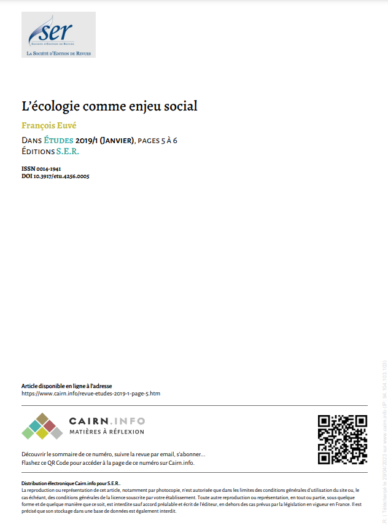
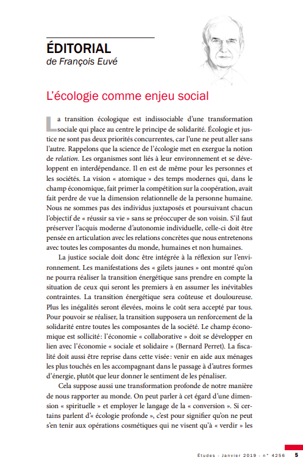
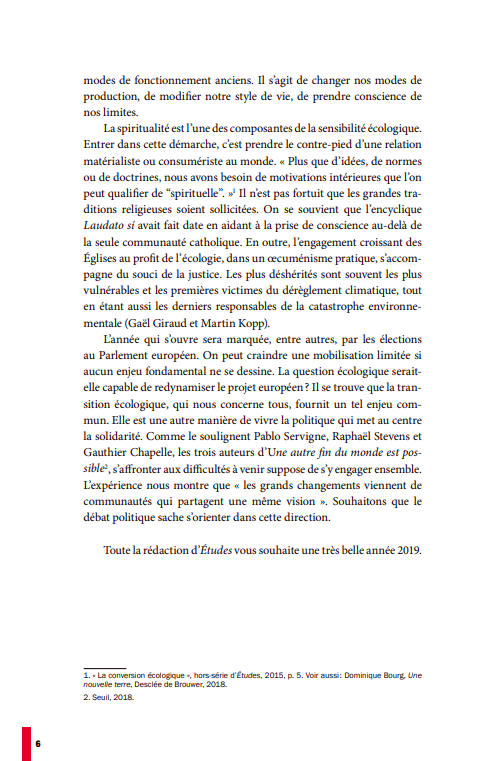

  
Dans cet article, on apprend que la transition énergétique va au-delà des aspects techniques et économiques, et qu'elle revêt également une dimension sociale. Pour réussir cette transition, il est nécessaire de cultiver la solidarité et de remettre en question notre mentalité individualiste. En effet, la transition énergétique ne se limite pas uniquement à la transformation de notre modèle de production d'énergie, mais elle implique également un changement profond dans notre mode de vie.
Il est essentiel de comprendre que la transition énergétique nécessite une collaboration collective et une volonté de repenser nos comportements et nos habitudes. Cela va de l'adoption de modes de transport plus durables à la réduction de notre consommation d'énergie, en passant par la promotion des énergies renouvelables et l'amélioration de l'efficacité énergétique dans nos bâtiments.
En réalité, la transition énergétique englobe un large éventail de domaines, tels que l'éducation, la gouvernance, l'économie et le développement social. Elle demande une prise de conscience collective et une mobilisation de tous les acteurs de la société, qu'ils soient individus, entreprises, institutions ou gouvernements.
Il est donc primordial de considérer la transition énergétique comme une opportunité de repenser notre façon de vivre, de promouvoir la solidarité et de construire un avenir durable pour les générations futures.
Cet article met en avant la responsabilité des adultes dans la transition énergétique, car nous avons le devoir de changer notre comportement et d'influencer de manière positive les générations futures. En tant qu'adultes, nous devons assumer notre responsabilité et devenir des acteurs du changement, afin de transmettre cette responsabilité aux jeunes.
Il est crucial de reconnaître que notre engagement et notre attitude envers la transition énergétique peuvent avoir un impact significatif sur les générations à venir. En adoptant des comportements responsables et durables, nous pouvons servir de modèles aux jeunes et les sensibiliser aux enjeux environnementaux.
Cela implique de revoir nos modes de consommation, d'adopter des pratiques plus respectueuses de l'environnement et de promouvoir des alternatives durables dans notre vie quotidienne. En faisant preuve de responsabilité et en agissant de manière cohérente, nous pouvons inspirer les plus jeunes à faire de même.
Il est important de souligner que la transition énergétique ne repose pas uniquement sur les épaules des adultes, mais qu'elle requiert également la participation active des jeunes. En les éduquant et en les encourageant à prendre part aux initiatives écologiques, nous les aidons à devenir des agents de changement et à contribuer à un avenir plus durable.
En résumé, en tant qu'adultes, il est de notre devoir de changer nos comportements et d'influencer positivement les générations futures. En nous responsabilisant et en adoptant des pratiques durables, nous pouvons inspirer les jeunes à suivre le même chemin vers une transition énergétique plus harmonieuse et respectueuse de l'environnement.
Un exemple qui me vient immédiatement à l'esprit est la mise en place de la zone de basse émission à Bruxelles. Bien que nous souhaitons une transition rapide vers l'utilisation exclusive de voitures électriques, il est important de considérer les personnes qui n'ont pas les moyens financiers d'en acquérir une et qui dépendent d'une voiture pour leurs besoins quotidiens. De plus, il existe des personnes qui utilisent régulièrement une voiture par confort, même si elles n'en ont pas réellement besoin.
Dans ce contexte, il est nécessaire de faire preuve de solidarité envers ces individus en leur offrant des alternatives accessibles et abordables pour se procurer une voiture, comme des programmes de partage de véhicules ou des solutions de transport collectif adaptées à leurs besoins. Il est également important d'encourager une réflexion individuelle sur l'impact environnemental de nos choix et de promouvoir l'utilisation des transports en commun, du covoiturage, du vélo ou de la marche lorsque cela est possible.
Il s'agit d'un équilibre délicat entre la nécessité de soutenir les personnes qui dépendent encore des voitures et la promotion d'un mode de vie durable et respectueux de l'environnement. La solidarité et la sensibilisation sont des éléments clés pour surmonter cette difficulté et encourager une transition énergétique plus inclusive et équitable.
En résumé, la mise en place de mesures visant à favoriser l'utilisation de voitures électriques doit être accompagnée de politiques sociales et de soutien pour garantir l'accessibilité à tous, tout en sensibilisant à l'importance de réduire notre dépendance à la voiture individuelle et d'explorer des alternatives plus durables.
Il est crucial de ne plus faire croire aux enfants que la réussite se résume à la richesse matérielle. Une telle mentalité peut encourager l'égoïsme et une vision individualiste de la vie. Au contraire, il est primordial de promouvoir le travail d'équipe, d'éviter la compétition excessive et de transmettre des valeurs telles que le partage, la solidarité, la charité et la passion.
Il est essentiel de leur enseigner que la réussite peut prendre différentes formes, notamment l'épanouissement personnel, la contribution positive à la société, le développement de talents et de passions, ainsi que la recherche du bien-être collectif. Il est important de leur montrer que la richesse véritable réside dans les relations humaines, l'entraide et la création d'un monde meilleur.
En encourageant la collaboration plutôt que la compétition, les enfants apprendront à travailler ensemble, à partager leurs connaissances et à se soutenir mutuellement. Ils développeront ainsi des compétences sociales et émotionnelles essentielles pour réussir dans leur vie personnelle et professionnelle.
En favorisant des activités qui mettent l'accent sur la coopération, l'empathie et le service aux autres, les enfants seront amenés à se concentrer sur des valeurs plus profondes que la simple accumulation de richesses matérielles. Cela contribuera à forger des individus responsables, conscients de l'importance de l'altruisme et engagés à contribuer à la société de manière positive.
En résumé, il est primordial de changer la perception de la réussite chez les enfants en mettant l'accent sur des valeurs telles que le partage, la solidarité, la charité et la passion, plutôt que de les associer uniquement à la richesse matérielle. En leur enseignant l'importance de travailler en équipe, de partager et de contribuer à la société, nous formons les adultes de demain qui sauront agir de manière altruiste et responsable.
Mon identité a évolué au fil de mes recherches, notamment dans le domaine de l'écologie. Bien que j'aie toujours été engagé dans cette thématique, ma prise de conscience s'est approfondie au cours de mes études. J'ai réalisé à quel point nos actions peuvent avoir des conséquences dramatiques, même celles qui semblent anodines.
Par exemple, observer un enfant jeter un berlingot dans le canal peut sembler insignifiant, mais nous ne nous rendons pas compte que la paille de ce berlingot, une fois dans la mer, peut causer la mort d'un animal marin. C'est grâce à ces prises de conscience que mon identité a évolué, en comprenant que chaque action a des répercussions, qu'elles soient positives ou négatives.
En tant qu'enseignant, il est de mon devoir d'influencer les jeunes à adopter une attitude responsable, que ce soit envers l'environnement ou dans leur comportement au sein de la société. Je souhaite les sensibiliser aux conséquences de leurs actes et les encourager à faire des choix éclairés.
Quant à ma méthode de travail, je ne pense pas qu'elle ait beaucoup évolué, car j'avais déjà une bonne organisation depuis ma 7ème année en spécialité mathématiques. Je savais comment planifier mes semaines en fonction des cours et des travaux à domicile. J'étais également capable de m'organiser pendant les périodes de révisions et les sessions d'examens.
Donc, du point de vue de ma méthodologie, je considère que j'étais déjà bien préparé et efficace. Cependant, mes recherches et mon engagement dans l'écologie ont enrichi ma réflexion et ma compréhension du monde qui m'entoure, ce qui a influencé ma vision en tant qu'enseignant et ma volonté de transmettre des valeurs responsables aux jeunes générations.